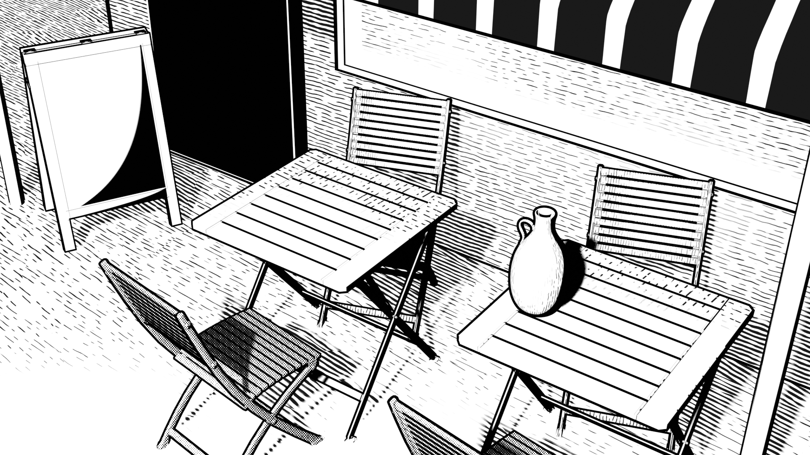

🎨 CATS
The Comic Artist's Tools Suite (a.k.a CATS) is a Python add-on for Blender that enables digital artists to procedurally generate and synthesize a selection of curated Non-Photorealistic Rendering (NPR) effects through an accessible and user-friendly interface. Users can quickly create and adjust modular shaders that customize the style of their 3D environment backgrounds, bypassing the need to craft shaders by hand and speeding up the traditional workflow for rendering pipelines.
Demonstration
CATS functions through a menu docked inside of Blender. In this demonstration, we see how different layers can be selected, and how properties can be adjusted simply through sliders and standard UI elements.

Motivation
In the modern day, technology aids workflows across many creative industries. However, for an indie artist who wishes to learn these technological pipelines, there are high barriers to entry; proprietary tools are expensive, and technical expertise takes time to develop, making it difficult for a newcomer to use the technology in full.
CATS aims to to help artists with little 3D experience create interesting, distinctive rendering styles with minimal hassle. By abstracting away the tedious work of creating shaders, and instead providing robust sets of parameters to adjust, we can empower users to skip to their own creative exploration of NPR styles that they can use on models and environments for their own projects.
Design & Implementation
Much work went into creating CATS, including:
- Designing a user-friendly UX/UI that makes use of/mimics existing 2D digital art software conventions, using the metaphor of "layers" to introduce different NPR styles that can be combined
- Creating a modular design scheme for procedurally generated shaders with hierarchical structure; allows for creation of a composite master shader, and several node groups within that which serve to control different shading layers
- Curating useful properties for tuning shader appearances, made accessible through a streamlined UI
- Implementing NPR techniques in CATS, like: toon shading, hatched shading, dithered shading, and object outlines
- Allowing for batch processing objects, and shader preset saving and loading
Sample Work
Here are two renders of a cafe environment using CATS shaders to achieve different aesthetic styles. The first style is entirely monochromatic, inspired by the manga Witch Hat Atelier; the second style uses color only, inspired by the webcomic Cucumber Quest.

Comic
To show CATS in action, this is a short comic strip I drew which showcases a 3D environment textured by CATS. The cafe environment and signboard were rendered from various angles in Blender, while the character, lettering, and overall composition were done with Clip Studio Paint.
Accredation
This tool is being developed solely by me, with help from various Blender resources and gurus online! I began developing this tool for my Masters thesis in 2022, and am currently the sole developer on it still. It is a work in progress; but I hope to release the first public build by the end of May 2022 on Github, and link to the paper I am writing for my thesis here.